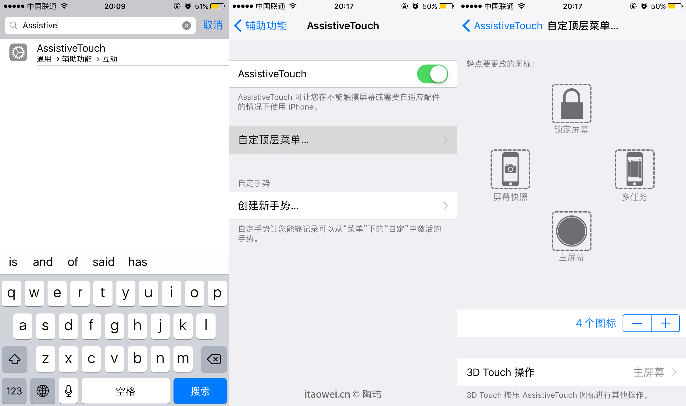
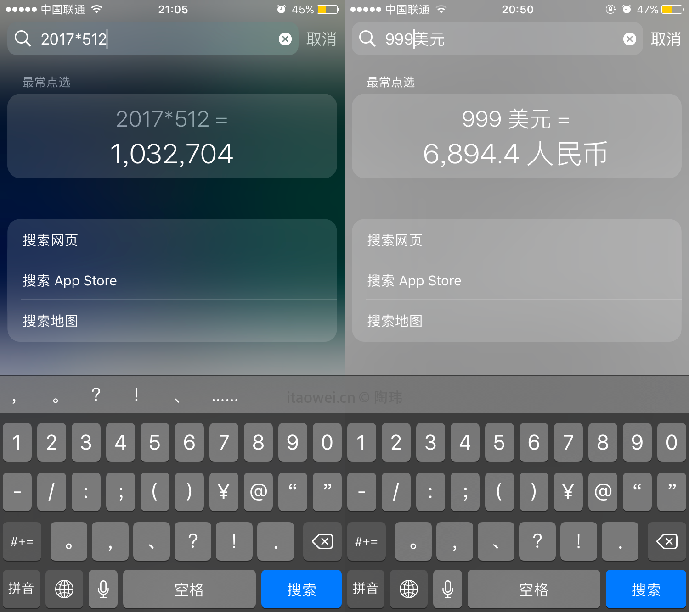
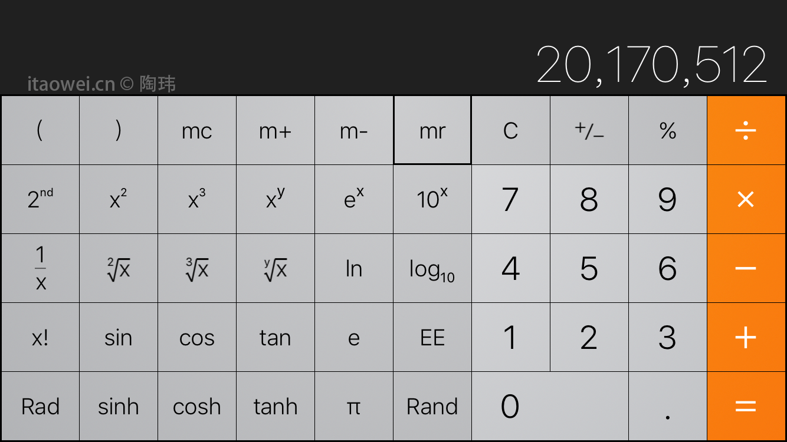

本文主要针对iOS新手。更多地从有利于提高工作/学习效率的角度进行阐述。
对于上下滑动的内容，点触屏幕顶端的时间即可”回到顶端”。
摇一摇手机进行”撤回”操作.
常用的按键操作。
- 多任务:双击Home键(支持3D Touch的iPhone设备也可以重按屏幕左侧边)
- 截屏:同时按下电源键+Home键
- 呼出Siri:长按Home键
- 强制重启:同时长按电源键+Home键持续几秒(iPhone7及以后为电源键+音量减小键)
Assistive Touch可以方便地将一些按键操作转为触屏操作，且可以自定义设置，设置步骤如下：

想要单手操作，却够不着屏幕上方。试试轻轻点触Home键两次。
锁屏状态下，双击Home键呼出Wallet凭证以及Apple Pay。(须在设置中开启)
大多数情况，
从屏幕顶端下拉，直至搜索框出现就轻轻放开(iOS11取消了此功能，主界面直接从屏幕中间部分下划可进入搜索)，即可输入要搜索的内容。常用的单位转换/数值计算也很方便：
系统自带计算器在横屏模式下变身科学计算器。

其实很多技巧在”提示”APP里都会介绍。
下篇将介绍一些iOS上有助于提高效率的APP。^_^
如果这篇文章对你有帮助的话，欢迎打赏（一分一角都是爱）
考虑到手机端暂时没能设置出方便的打赏渠道，目前仅限电脑端。
本网站在电脑端的“回到顶端”就是点击右下角的微信图案哈哈哈……